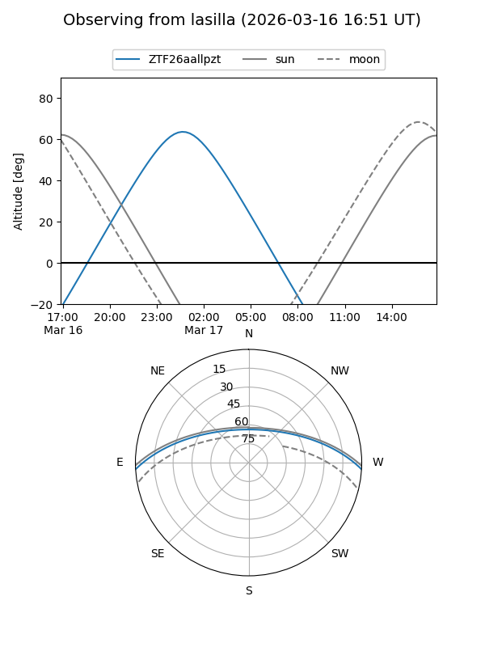
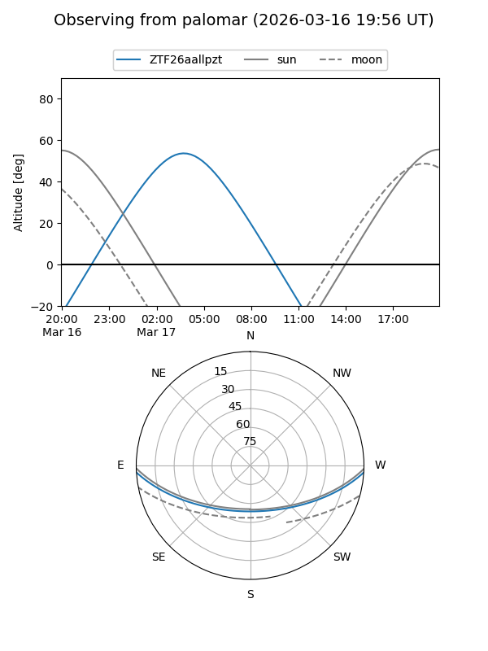

ZTF26aallpzt
Target ZTF26aallpzt at 2026-03-17 04:20
Aliases and brokers:
FINK: link
Lasair: link
ALeRCE: link
alt names
ZTF26aallpzt (ztf,fink_ztf)
Coordinates:
equatorial (ra, dec) = 113.4150,-2.88851
equatorial (HMS+DMS) = 07:33:39.59,-02:53:18.63
galactic (l, b) = (220.3753,+8.03915)
Flags:
Photometry:
last ztfg=20.06
1 ztfg detections
Lightcurve
Visibility


Additional plots